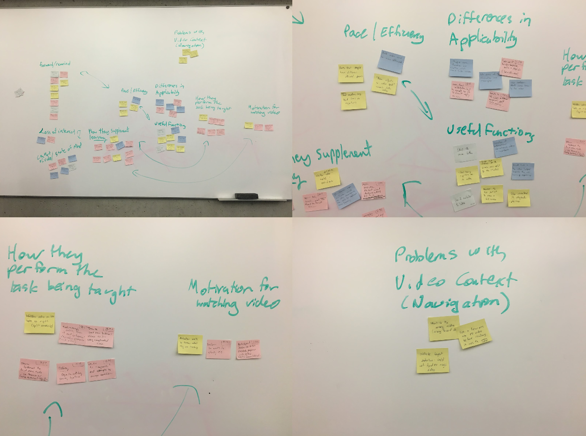
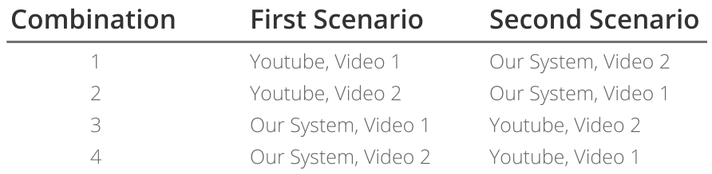
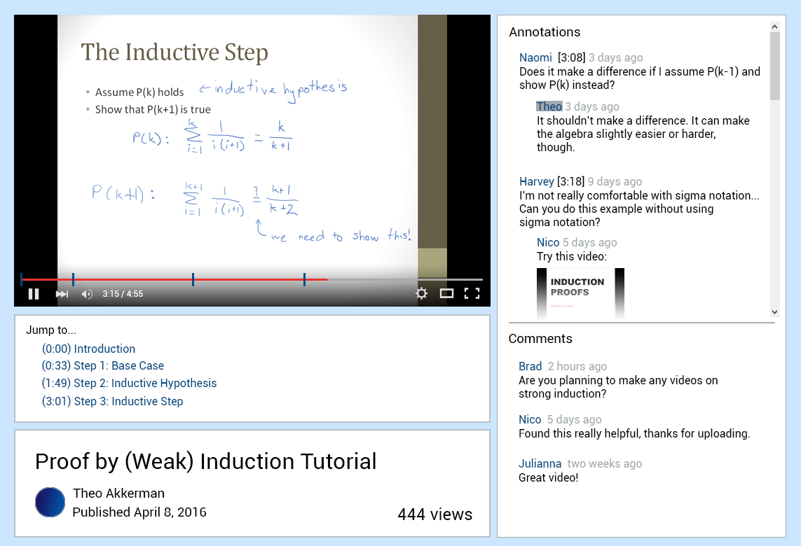

Collaborative Video
_________________________________________________________________________________________________________________________________________________________
About the project
When viewers watch educational videos, they tend to be curious about a certain subject or have questions about a specific topic. However, not all educational videos have the answers to these questions. Instead, more questions may even arise. This is where the Collaborative Video project comes in. The purpose of this project was to develop a video hosting platform to facilitate the use of educational videos, ranging from informational to tutorial videos.
My role
I worked with a great team right from the beginning to the very end, ranging from brainstorming new ideas, to designing and creating the interface of the project. Although not all of the work and ideas made it to the final product, it was an amazing learning experience and I would love to do it all over again.
FOCAL POINTS
We ran a field study in order to understand how people are currently using educational (tutorial or informational) videos, and how they would like to be able to use these videos. These were our focal points:
1. How do people watch and follow educational videos? What kinds of interactions do people have with the video and the context the video is in?
2. What aspects of the video do people find important to achieve their goal? What do people find most helpful about them?
3. What are the deficiencies that people find when following videos? How do people critique videos? How do they currently address these deficiencies?
4. What do people want to do that they cannot currently?
PLANNING
Here are some of the planning out we did before making an initial prototype. After conducting the field study, we grouped the data we gathered into an affinity diagram. We later focused on features of the prototype we wanted to implement and created sketches.


LOW FIDELITY PROTOTYPE
EXPERIMENT DESIGN
To test the speed of finding annotations, we used a 2×2 (annotation visibility x interface type) within-subjects factorial design. We had 2 levels of annotation visibility: high and low. We will also had 2 levels of interface type: YouTube (System Red to participants) and our interface (System Blue). To test the time taken to complete an entire task described in a video, we used a t-test to compare both interface types.
We also used a counterbalancing method to eliminate order effects. Participants interacted with both interfaces with two different videos. For example, a user might be assigned to the first video on our system followed by the second video on YouTube. There are four possible possible combinations displayed in the table below:

MEDIUM FIDELITY PROTOTYPE
MOCK-UP
For our medium fidelity prototype, we prioritized functionality over appearance. Below is a mock-up of what our prototype would look like if it was more polished up.

FUTURE RECOMMENDATIONS
From the results of our experiment, the overall approach of our system was valid. However, there are various recommendations that can be made to further improve both the design of our system and experiment. We can focus more on the interaction between the users and annotations to further improve our design. For our experiment, we only used tutorial videos. Considering other types of videos, such as informational, would yield more results regarding the interaction between the user and our interface.
Thanks for reading!
To find out more about this project, check out the blog
here!
Also, feel free to check out more of my work below!

Collaborative Video
A video platform focused on how users interact with educational videos.

Redesigning Yelp's Interface
An improvement upon the UX of Yelp's review interface.

Product Launcher
The design of a software that launches multiple products.

Mobile Platformer Game
A personal project of a 2D mobile platformer game.
Previous
Next